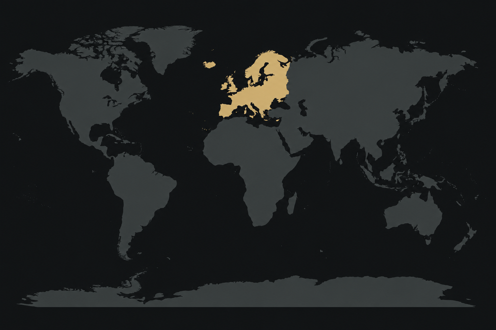

01 /
WHERE IT STARTED
Europe.

My roots in crypto.
As a French native, Europe is where I first got involved in crypto. Over the years, I’ve built relationships with traders, community leaders and project teams through trading, community work and partnerships.
These connections grew alongside my experience in the space, through shared interests, regular conversations and working together on Web3 projects.